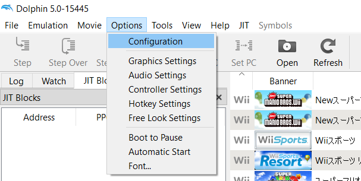
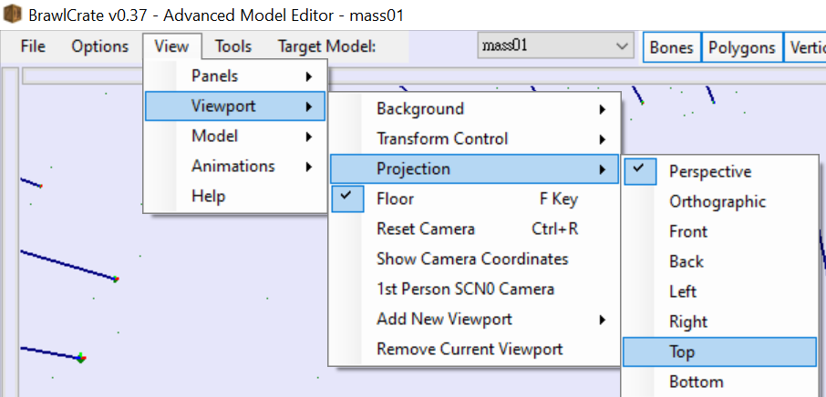
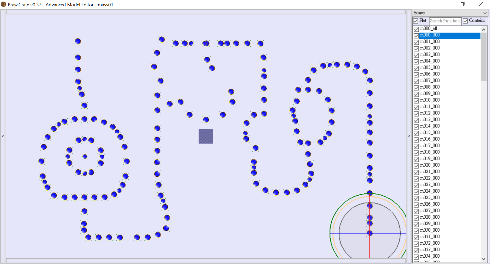
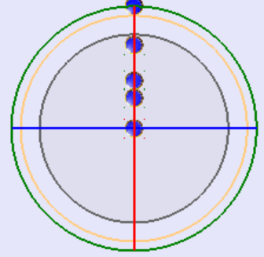
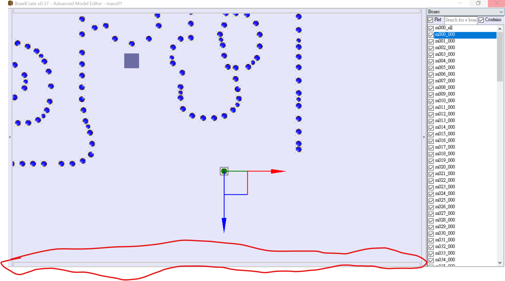
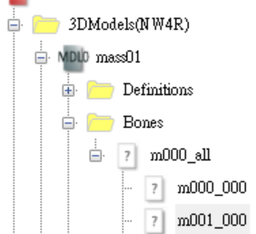

HELP WITH BRRES MODELS
Help needed with model importing for Wii.
Please contact me via Youtube comments on any Mario Party 9 videos
if you have any knowledge about model importing for Wii games
Page work in progress
I mean, it is viewable, but not perfect. A new design is coming in your way!
Edit board spaces
I was finding unused content in Mario Party 9.
So naturally, I would discover the file which contains the Spaces.
And as it turns out, it was pretty straightforward for editing the baord spaces.
Tools / Software & Files needed
- BrawlBox or other BRRES editor
I will use BrawlCrate here, which is a fork of BrawlBox, with updates and patches.
However, I will not provide tutortals on editing with other BRRES editor as there are a number of those, and some will not work for editing.
- Dolphin Emulator
- Alternatively, use other ISO extraction tools and play the edited board on real console. (UNTESTED)
- A ROM of Mario Party 9 (Use a legitimate version, downloading free ROMs are strongly discouraged and may be illegal.)
1. Extract the ISO
Extract the content of the ISO first.
For Dolphin Emulator,
- Go to Option -> Configuration -> Paths -> Add

- Select the path containing the Mario Party 9 ISO.
- When the Mario Party 9 Logo appears in the main menu, Right Click -> Properties -> Filesystem
If the Filesystem tab is not showing, click the arrow button.
- Right click Disc -> Extract entire disks...
- Choose a location. This will be where your game file stores. (It is recommended to store these files in a seperate, new folder.)
- Wait for the extraction to be completed.
2. Locate the board file
- Open BrawlBox, Choose File -> Open
- Go to the location of the extracted folder
- From here, navigate to
DATA/files/common
-
Choose your boards. Enter inside the respective folder.
Board lists:
- bd00: Unused Early Toad Road. More info
- bd01: Toad Road
- bd02: Bob-omb Factory
- bd03: Boo's Horror Castle
- bd04: Blooper Beach
- bd05: Magma Mine
- bd06: Bowser Station
- bd07: DK's Jungle Ruins
- Select "mass.brres.lz"
3. Edit space position
- Double click the "3DModel (NW4R)" Folder
Each file represents different paths.
e.g. In Toad Road, mass01 is the main path, mass04 is the bonus area, and mass05 is the Captain Event path.
-
Right click the path that will be edited -> Preview
If this is not the path you want to edit, just close the window and open the oether file.

Note: For convinence set the Viewport Projection to top
(View -> Viewport -> Projection -> Top)
-
Click the "<" button on the right to expand and show a menu
-

Select one of the item in the list.
This is the space that will be moved.

If it showed up as a sphere, press "T" to change to transform mode
-
Drag the space around to the desired location.

For situation where dragging won't work or Y position needed to be changed,
Click the button at the bottom. At the "Transform" Row is where X, Y and Z position are stored.
Edit those value for the desired position.
- When the editing is done, close the window, reopen the main BrawlBox window and Save (Cltr + S)
4. Change the space type
For convinence, open the Model Preview window mentioned in 3. with the menu expanded.
- Double click the "3DModel (NW4R)" Folder
Each file represents different paths.
e.g. In Toad Road, mass01 is the main path, mass04 is the bonus area, and mass05 is the Captain Event path.
-
Double click the path that will be edited -> Bones -> m000_all
If this is not the path you want to edit, just close the window and open the oether file.

A sample of the "folder" that will be opned
-
Here, Spaces are represented by unique IDs.
Select the space to be edited.
(For the space id, refer to the model preview menu, and select the corresponding item / space)
-
In the menu at the right, locate the UserEntries column.
Expand the column, expand the "ms_type:xx" column, and expand the "Entries" Column
-xx may vary on spaces. This is the value to be editted.
-To expand, Click on the arrow to expand
-
At the [0] row, edit the value next to it.
That is the xx value.
Each space have different value. Here is a list for the what the vaue represents.
-
To edit other space, simply select the other space in the left list.
-
Save your progress (Ctrl + S)
To Save, BrawlBox might not recognise change(s) has been made.
In this case, change any one of the space's position in the model preview.